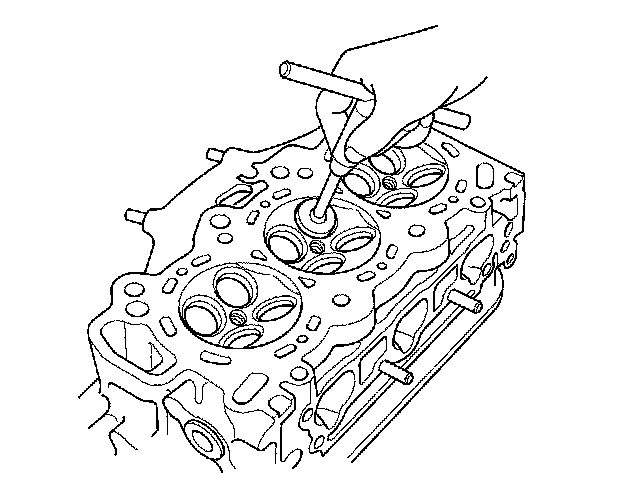
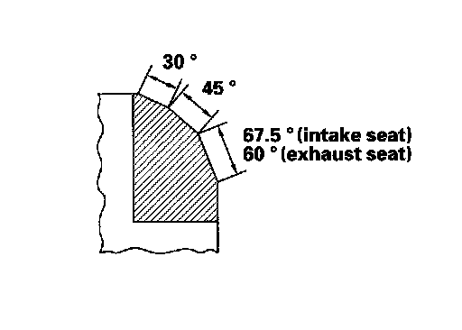
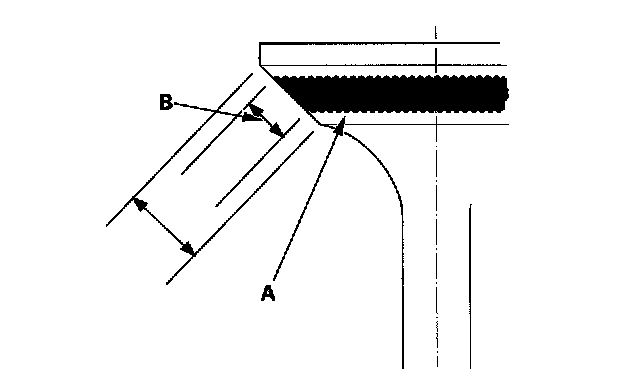
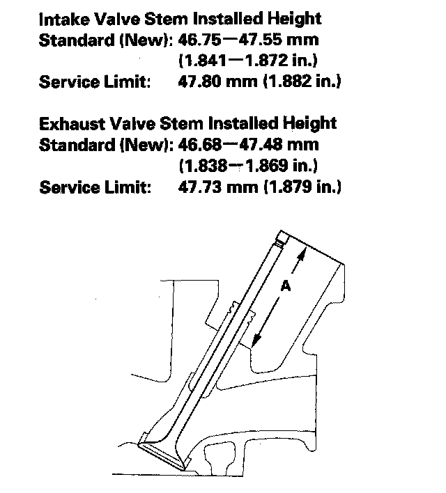

Valve Seat Reconditioning
Valve Seat Reconditioning1. Inspect valve stem-to-guide clearance. If the valve guides are worn, replace them before cutting the valve seats.
2. Renew the valve seats in the cylinder head using a valve seat cutter.

3. Carefully cut a 45° seat, removing only enough material to ensure a smooth and concentric seat.
4. Bevel the upper edge of the seat with the 30° cutter and the lower edge of the seat with the 67.5° cutter (intake seat) or the 60° cutter (exhaust seat). Check the width of the seat and adjust accordingly.

5. Make one more very light pass with the 45° cutter to remove any possible burrs caused by the other cutters.
Valve Seat Width
Standard (New): 1.25-1.55 mm (0.049-0.061 in.)
Service Limit: 2.00 mm (0.079 in.)
6. After resurfacing the seat, inspect it for even valve seating. Apply Prussian Blue compound (A) to the valve face. Insert the valve in its original location in the head, then lift it and snap it closed against the seat several times.

7. The actual valve seating surface (B), as shown by the blue compound, should be centered on the seat.
^ If it is too high (closer to the valve stem), you must make a second cut with the 67.5° cutter (intake seat) or the 60° cutter (exhaust seat) to move it down, then one more cut with the 45° cutter to restore seat width.
^ If it is too low (closer to the valve edge), you must make a second cut with the 30° cutter to move it up, then one more cut with the 45° cutter to restore seat width.
NOTE: The final cut should always be made with the 45° cutter.
8. Insert the intake and exhaust valves in the head, and measure the valve stem installed height (A).

9. If the valve stem installed height is beyond the service limit, replace the valve and recheck. If it is still beyond the service limit, replace the cylinder head; the valve seat in the head is too deep.